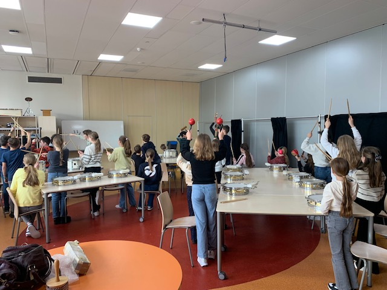
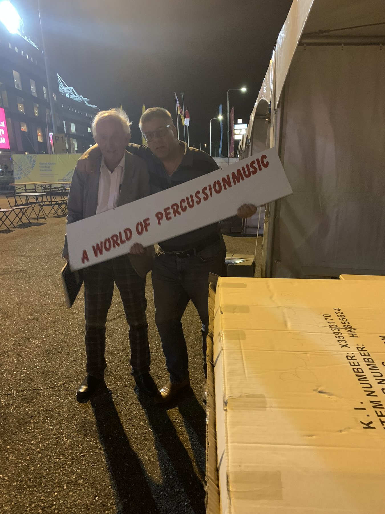
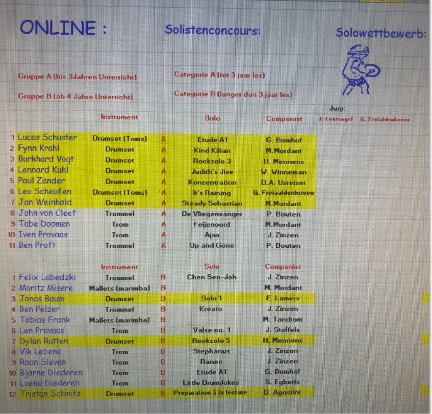
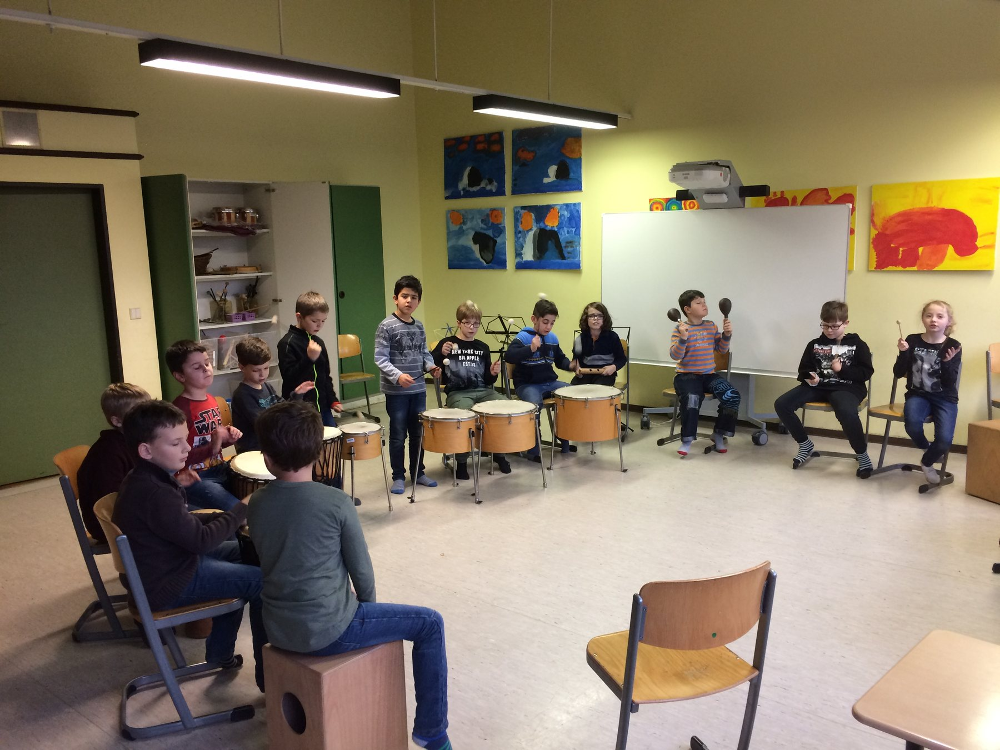
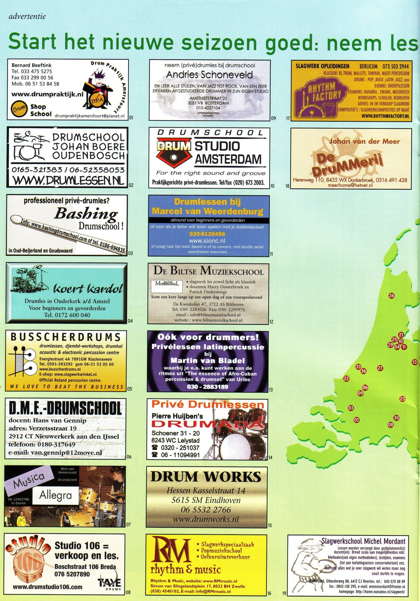

Educatie & projecten
Projecten en workshops
Praktische projecten die ritme, creativiteit en instrumentenbouw naar scholen, kleuterscholen en muziekverenigingen brengen — in Nederland en in Duitsland.
Projecten in Nederland
Nederland
Overige activiteiten
Workshops, cursussen en meer
Een overzicht per jaar van workshops, trommelgroepen op scholen, cursussen en overige activiteiten.
- 2024
- Workshop, basisschool De Neerakker, Heythuysen
- Workshop, basisschool Franciscus, Bunde
- Grundschule Don Bosco Eschweiler — trommelgroep (Trommel AG)

- 2023
- Workshop, Catharinaschool, Heerlen
- Workshop, basisschool De Neerakker, Heythuysen
- Grundschule Don Bosco Eschweiler — trommelgroep
- 2022
- World Music Contest (W.M.C.), Kerkrade
- Grundschule Don Bosco Eschweiler — trommelgroep

PAS-stand op het WMC Kerkrade. 
“A World of Percussion Music”. - 2021
- Online slagwerkconcours
- Schenking van bladmuziek
- Kindergarten Alsdorf — trommelgroep (Trommelspiel AG)
- Grundschule Don Bosco Eschweiler — trommelgroep

Online solistenconcours 2021. 
Schenking van bladmuziek. - 2019t/m 2020
- Kindergarten Alsdorf — trommelgroep
- Grundschule Don Bosco Eschweiler — trommelgroep
- Slagwerkschool / Schlagzeugschule: open dag (Tag der offenen Tür)
- Theoriecursus — Limbricht, Schimmert, Schinnen e.a.

Open dag, slagwerkschool. 
Theoriecursus. - 2017
- Kindergarten Alsdorf — trommelgroep
- Grundschule Don Bosco Eschweiler — trommelgroep

Kindergarten Alsdorf. 
Grundschule Don Bosco, Eschweiler. - 2016
- Myouthic-workshop, basisschool Koningslust
- 2015
- Workshop, Trommler- und Pfeifercorps 1931 Kinzweiler e.V.
- Workshop, Batterbarak Maasniel
- Sporting Heerlen voetbalkamp
- 2014
- Trommler- und Pfeifercorps Mausbach 1920 e.V.
- 2012
- Workshop, St. Pieter Maastricht (met Myrthe en Sander)
- 2011
- Workshop, Bergrath (Duitsland)
- 2010
- 20 maart — workshop directie bij de Bond van Tambour Maîtres (bvtm.nl)
- 2006
- Schoolworkshop
- 2004
- 2000– heden


2004
Slagwerkkrant
Advertentie in het Nederlandse slagwerktijdschrift Slagwerkkrant.

